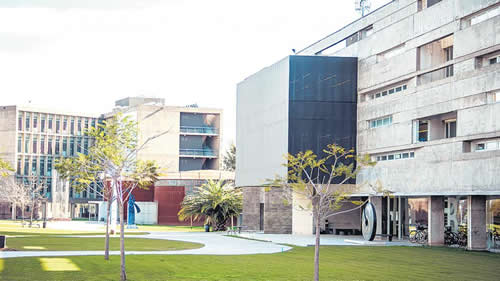

Real Chubut - Agencia de Noticias


El otro recorte a la universidad pública

Mientras las universidades resisten el ajuste presupuestario, una iniciativa del Gobierno, al servicio de una de las principales exportadoras del país, abre un nuevo frente de conflicto en el conurbano bonaerense. Mediante una resolución de la Agencia de Administración de Bienes del Estado (AABE), el Ministerio de Transporte decidió quitarle a la Universidad Nacional de San Martín (Unsam) una parte de su campus, contigua a la estación Miguelete del ferrocarril Mitre, y cedérselo a Nuevo Central Argentino S.A., propiedad de la Aceitera General Deheza, para instalar una playa de cargas. La universidad informó a los enviados del ministro Guillermo Dietrich sobre el centro de estudios que funciona allí y las unidades académicas que el propio Estado planea construir en ese predio de 1,2 hectáreas, advirtió sobre el impacto negativo que implicará no sólo para profesores y estudiantes, sino para el medio ambiente y los vecinos de San Martín (un estudio del Instituto de Transporte de la UNSAM calculó que llegarán a entrar y salir hasta 115 camiones por día). Pero el Gobierno hizo oídos sordos y avanzó invocando como argumento “la subocupación” del espacio.
El rector de la Unsam, Carlos Greco, anunció que se iniciarán acciones legales para impedir la cesión y reclamó que se suspenda la medida. Este miércoles, a las 17.30, con las consignas “La Unsam no se toca” y “Universidad pública por siempre”, los alumnos realizarán un abrazo a la casa de estudios.
En los últimos 15 años, la Unsam construyó o reacondicionó más de 60 mil metros cuadrados en aulas, laboratorios y oficinas para actividades de enseñanza, investigación y gestión, recordó Greco en una carta a la comunidad académica, para remarcar “el desarrollo edilicio y territorial” alcanzado por la casa de estudios que cambió la fisonomía de San Martín y la vida de miles de familias. “El esfuerzo de la institución para poner en valor un terreno largamente postergado se ha visto muchas veces entorpecido por la desidia de organismos que deberían haber retirado el material ferroviario de rezago existente en un vasto sector del campus, el cual genera condiciones de perjuicio ambiental e inseguridad”, apuntó. Esa desidia se tradujo el 28 de septiembre pasado en el incendio de cinco vagones abandonados en un depósito frente a una de las facultades. Las columnas de humo negro obligaron a suspender el servicio del Mitre y complicaron el tránsito en la General Paz, pero no activaron al Estado a desocupar el terreno, que según admite la AABE conserva “diferentes trazas de vías, vagones en estado de abandono, grandes montículos de tierra y acopio de material de uso ferroviario”. Fue paradójicamente la universidad la que, con sus propios recursos, debió comprar un camión grúa para remover materiales peligrosos.
El problema que el Gobierno pretende resolver quitándole espacio a la Unsam nació porque el Ministerio de Transporte decidió desafectar las playas de Retiro y Colegiales, donde Nuevo Central Argentino operó con contenedores y cargas generales desde 1992, cuando el Estado le dio en concesión por 30 años una red ferroviaria de 4700 kilómetros. La firma es apenas parte de la pata logística de la megacompañía de la familia Urquía, Aceitera General Deheza, que entre sus unidades de negocios incluye cereales, oleaginosas y negocios agropecuarios, y que el año pasado facturó más de 2800 millones de dólares en exportaciones y ventas en el mercado local. La firma opera puertos propios en Santa Fe y Rosario, y por iniciativas que gestiona Dietrich (como la construcción del empalme Ugarteche para vincular las vías del Mitre y del San Martín) pronto podrá entrar y salir con sus contenedores en forma directa también de Puerto Nuevo, en Retiro.
La resolución de la AABE está fechada el 13 de agosto y, además de su presidente Lanús (abogado de la Universidad Austral, ex miembro de directorios de empresas de gas y energía), la firma su segundo Pedro Villanueva. Más llamativa que la escueta explicación del destino que pretenden darle al predio es el breve análisis para justificar la “desafectación” a la Unsam. Un decreto de 2012 autoriza a desafectar bienes del Estado cuando se constate “falta de afectación específica, uso indebido, subutilización o estado de innecesariedad”, citan. Admiten que, ante la consulta, la universidad informó “los usos que está realizando o planea realizar” pero opinan que “las argumentaciones no logran desvirtuar el informe que determina la subocupación” del sector.
En el predio que el Estado pretende quitarle a la Unsam funciona el Centro de Desarrollo Tecnológico e Incubación de Empresas, con importantes proyectos de emprendedores, y está en ciernes la construcción de una Escuela Secundaria Técnica, de un Centro de Prototipado Integral de Viviendas Económicas y Sustentables y de un Laboratorio de Ciencia y Nanosistemas, entre otros. “Todas estas iniciativas cuentan con financiamiento propio y externo de la universidad”, destacó el rector. Aún si el Gobierno no les asignara ningún valor, otra parte de la argumentación desdeñada pasa por el impacto negativo del cambio “sobre todas las actividades que desarrollan en el Campus Miguelete los estudiantes, los docentes y el personal no docente”, y la afectación sobre “el medio ambiente y el entorno arquitectónico y urbanístico de nuestra casa de estudios”, destacó Greco.
El Instituto de Transporte de la Unsam estimó la magnitud que podrían alcanzar “las operaciones con contenedores llenos (generados por operaciones de importación) y vacíos (aquellos que no vayan al puerto) y cargas paletizadas”. “El rango de movimientos esperados se sitúa entre 10 y 12 mil camiones derivados de movimientos de carga paletizada y entre 15 y 17 mil para el movimiento de 7 mil contenedores año, ingresando y egresando anualmente del predio”, destaca el informe. “Atendiendo a la estacionalidad de estos movimientos”, calculan un movimiento de “hasta 100 o 115 camiones en un día hábil típico en la temporada de mayor movimiento”. De avanzar, la iniciativa de Dietrich “va a generar una actividad que puede alterar sensiblemente el contexto urbano mediante la circulación intensa de vehículos pesados, afectando no sólo la actividad universitaria –concluye–, sino la circulación general del área y la planificación urbana establecida por la Municipalidad de San Martín”.
Fuente: Politica Argentina